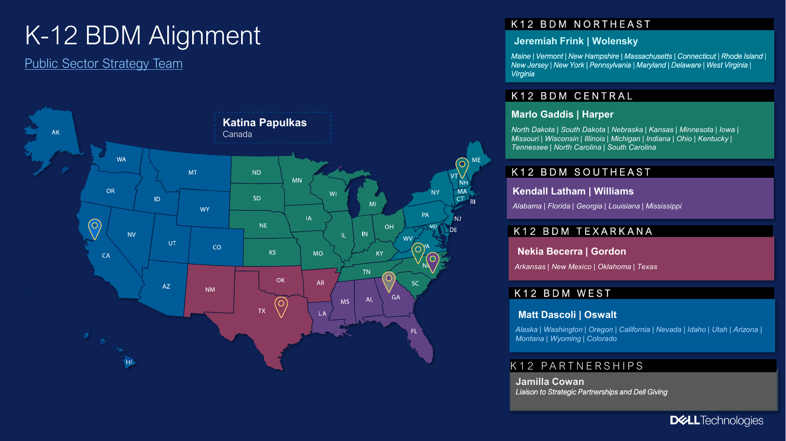

The Team
Find your strategist
Every region has a K-12 Education Strategist: a career educator who works alongside your accounts at no cost to the district. Find yours below and loop them in early. They're at their best when they're part of the plan, not a late add.
Jeremiah Frink
Northeast
ME · VT · NH · MA · CT · RI · NY · NJ · PA · MD · DE · DC · VA · WV
Marlo Gaddis
Central
ND · SD · NE · KS · MN · IA · MO · WI · IL · MI · IN · OH · KY · TN · NC · SC
Jamila Cowan
K-12 Partnerships
Liaison to Strategic Partnerships and Dell Giving

K-12 BDM Alignment, Public Sector Strategy Team. The colors match each strategist's region above.
Not sure which region an account falls under? Ask any of us and we'll route you.
The People
Meet the strategists
Open yours. Same structure for everyone: who they are, and the moments to bring them in.
Jeremiah Frink · Northeast
Before Dell I spent my career on the district side of the table: teacher, instructional coach, administrator, and executive director over technology and instruction, including nine years as a director at a BOCES/RIC in New York. I hold a PhD in Teaching, Curriculum and Change and serve on the ISTE+ASCD National Faculty.
Good moments to bring me in: a district wants an AI strategy conversation and a product deck won't land; instructional leaders will be in the room; an account is stalled and a listening-first engagement could restart it; a funding claim needs checking; a tech plan or RFP should be answered in the district's own language; a regional conference play needs shaping.
What I don't do, on purpose: I don't close, and I won't pitch into a listening meeting. Districts trust me because I'm not the one asking for the order, and that trust is what I bring to your accounts.
jeremiah.frink@dell.com · 585-877-3351
Marlo Gaddis · Central
[Background: two or three sentences in Marlo's voice]
[Good moments to bring Marlo in]
Marlo.Gaddis@dell.com · [phone]
Kendall Latham · Southeast
[Background: two or three sentences in Kendall's voice]
[Good moments to bring Kendall in]
Kendall.Latham1@dell.com · [phone]
Nekia Becerra · Texarkana
[Background: two or three sentences in Nekia's voice]
[Good moments to bring Nekia in]
Nekia.Becerra@Dell.com · [phone]
Matt Dascoli · West
[Background: two or three sentences in Matt's voice]
[Good moments to bring Matt in]
Matt.Dascoli@Dell.com · [phone]
Katina Papulkas · Canada
[Background: two or three sentences in Katina's voice]
[Good moments to bring Katina in]
Katina.Papulkas@dell.com · [phone]
Jennifer Hebert · Team Leader
[Role: leads the K-12 Education Strategy Team; when to route through Jennifer]
Jennifer.Hebert@dell.com · [phone]
Jamila Cowan · K-12 Partnerships
[Role: liaison to Strategic Partnerships and Dell Giving; when to route through Jamila]
Jamila.Cowan@dell.com · [phone]
Resources & Events
The toolkit
Everything below is built for you to use directly. The first three are ready now; the rest link out to SharePoint and will light up as they're connected.
District Engagement Playbook
Quick answers to the questions AEs ask: who decides, when money moves, what's top of mind, how to prep an intro meeting, and what funding claims to check.
Regional Conference Playbook
Driving a statewide or regional conference presence end to end, with the worksheets, templates, and idea catalogs one click in.
Student Programs
Girls Who Game, Student TechCrew, Data Dunkers, and Tech Career Circuit at a glance, with the official one-pagers to share.
Customer Intro Emails
Four ready-to-adapt emails for introducing your strategist to district leaders, organized by audience and tone.
NYS & BOCES/RICs Explained
How purchasing and contracts actually work through BOCES and RICs in New York, and the misconceptions that trip up deals.
State-by-State Guide
Jeremiah's guide to the territory, state by state: what's true on the ground and what to know before you engage.
Link comingDistrict Document Examples
The district-facing documents your strategist builds: crosswalks from a district's own plan to Dell support, plan reviews, AI field examples, and listening-session question sets.
Presentations & Session Materials
The Understanding K-12 enablement series decks, Sessions 1 through 6, plus the Student Programs session. Dell sign-in required.
Link comingTeam SharePoint
The full shared library: working documents, templates, and everything that doesn't live on this site.
Get in Touch
Reach out
Any outreach works, but the best asks include four things: the account, the timing, what the district has said, and what you need. That's everything we need to say yes quickly.
Jeremiah Okal-Frink · Northeast & Mid-Atlantic
jeremiah.frink@dell.com · 585-877-3351
For other regions, use the team roster above.